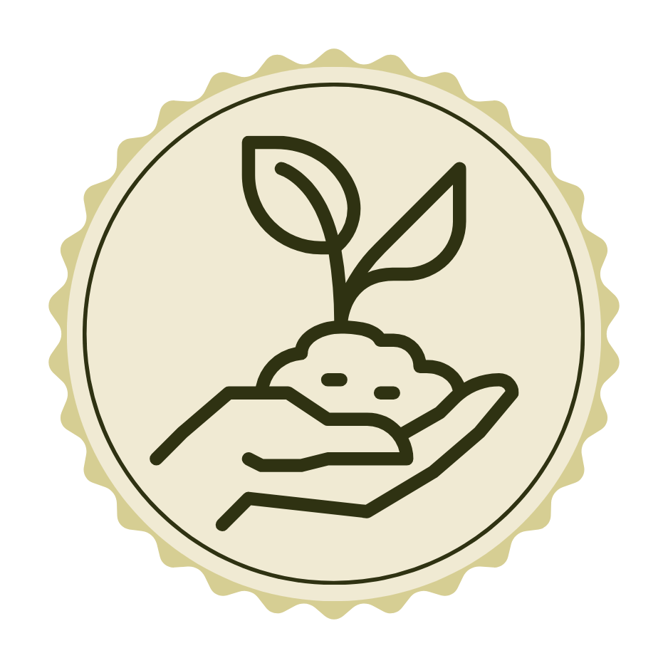
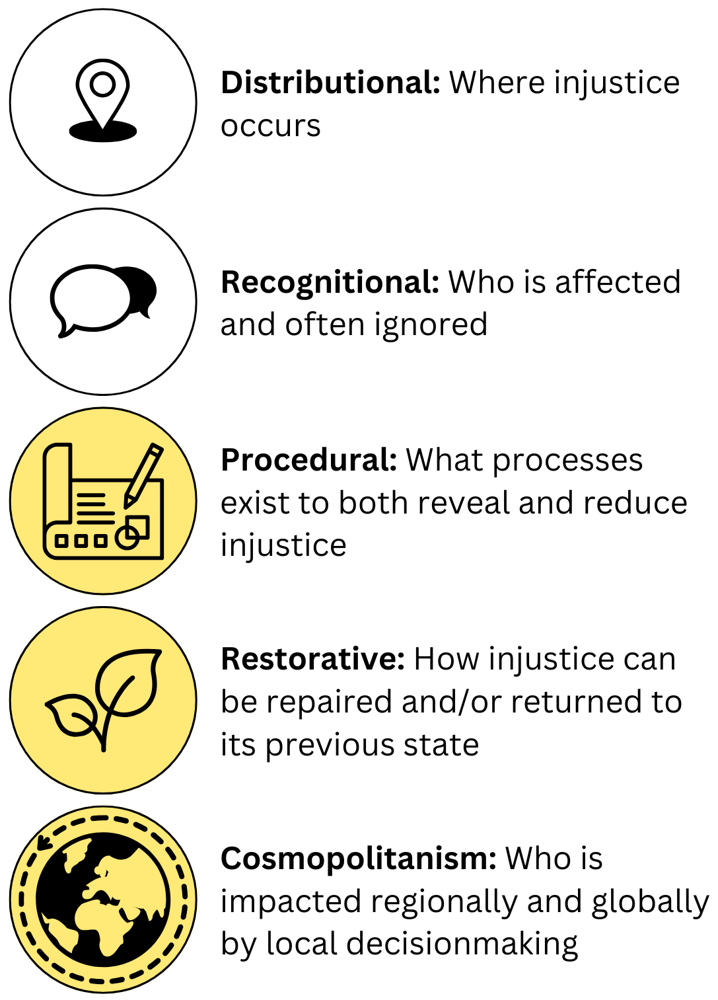

Welcome!
Environmental Justice: A Community-Centric Approach
Course Number: ES-202-01
Time: Tues & Fri 9:55 - 11:10 AM
Location:
Instructor: Dr. Mariah D. Caballero

I’m so glad you’re here!
- Grab a seat with a paper pile
- Blank name placquard
- Syllabus zine
- R Cheat Sheets
Name Placquard
- Please bring these for our first few class meetings (I’m a visual learner!)
- Write…
- Name
- Pronouns
- Add…
- Stickers !!
About Me
- Mariah Caballero
- Call me Dr./Professor Caballero, or Dr/Professor. Cab
- She/her pronouns
- New to Wellesley!
- PhD in Community Research and Action from Vanderbilt University, concentration in Climate and Energy Policy
Now You
- Name
- Pronouns
- Favorite sticker and why
About This Course
- Traditional take on Environmental Justice tends to focus on Distributional and Recognitional Justice
- My take on Environmental Justice:
- Expansive movement that welcomes everyone into belonging
- Community-based
- Solutions-focused
- Expands ideas of justice to include both theory and methods

Learning Outcomes
- Demonstrate an understanding of the nuances of an intersectional approach (i.e., race, ethnicity, gender, sexuality, class, and disability) and their applications to environmental injustice.
- Assess empirical patterns of environmental injustice in US communities related to Food, Energy, and Water (FEW nexus).
- Identify opportunities and challenges beyond distributional justice (procedural, recognitional, restorative, and cosmopolitan justice) for environmental solutions spatially and temporally.
Course Design
Tuesdays: Theory and community case study (discussion-based)
Fridays: Data visualization activity (in-class pairs, submitted individually)
First 9 weeks: Community case studies centered on past and present; introduction to R
Last 5 weeks: Present and future-looking community case studies; final project prep
| Course Components | % of Grade |
|---|---|
| Participation + Attendance | 10% |
| Weekly Assignments | 60% |
| Community Case Study Final Project | 30% |
Schedule
link to schedule
My Pedogogical Goals for Creating and Being in Community
- Democratic Education
- Pluralistic Learning
- Loving Corrections
Housekeeping
- Checking posit access
- Office Hours
- Set Shared Expectations
- Centering Activity?
Checking Posit Access
Office Hours
Centering Activity (optional)
- Life is busy, and we often have millions of things on our minds
- Centering activities are brief activities (2-3 minutes) meant to bring everyone into the present
- This could be…
- A breathing exercise
- A silly doodle
- A journaling activity
- Reading your favorite poem
- Sharing your favorite new song
- Are we into this?
For Friday
- Check course website for readings
- Preview first assignment and come prepared with questions